STGAT optimization and original notebook plots
Measured labels only. The existing benchmark was examined previously; selection uses chronological validation folds. Bands are empirically calibrated and have no exchangeability-based guarantee.
|
mae_m |
rmse_m |
macro_r2 |
| model |
|
|
|
| Persistence |
0.6192 |
1.0831 |
0.3817 |
| Seasonal |
1.4042 |
2.1716 |
-4.2772 |
| DampedTrend |
0.6200 |
1.0844 |
0.3804 |
| STGAT |
0.6053 |
1.0622 |
0.3950 |
| GRU |
0.6104 |
1.0754 |
0.3837 |
| LSTM |
0.6094 |
1.0777 |
0.3895 |
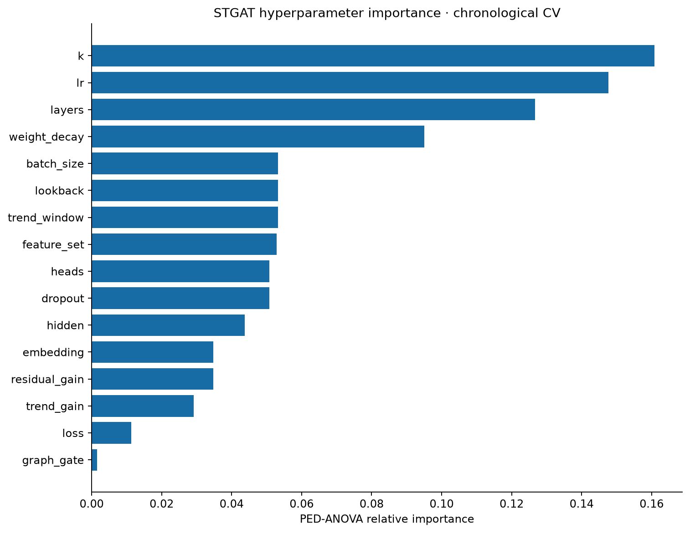
Hyperparameter Importance
CV parameter importance; association within the searched space.
Vector SVG
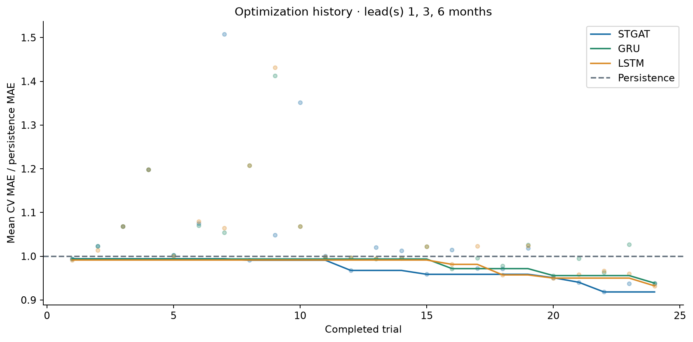
Optimization History
Three chronological folds; lower ratios are better.
Vector SVG
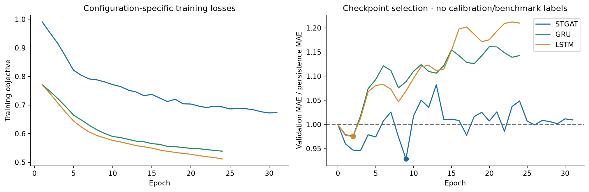
Training Curve
First ensemble seed; circles mark minimum validation ratio; losses may differ, validation skill is comparable.
Vector SVG
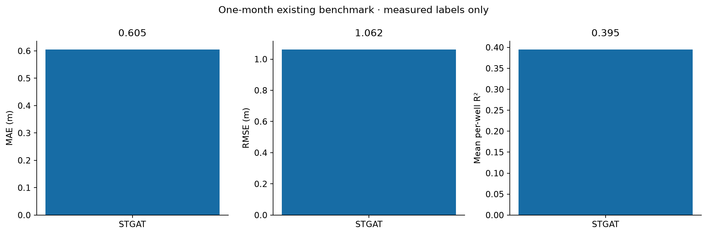
Model Metrics
Different metrics use separate axes; R² is averaged within wells.
Vector SVG
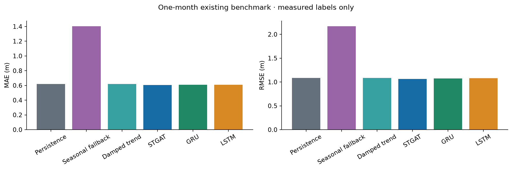
Metrics Comparison
All models score the same measured one-month targets.
Vector SVG
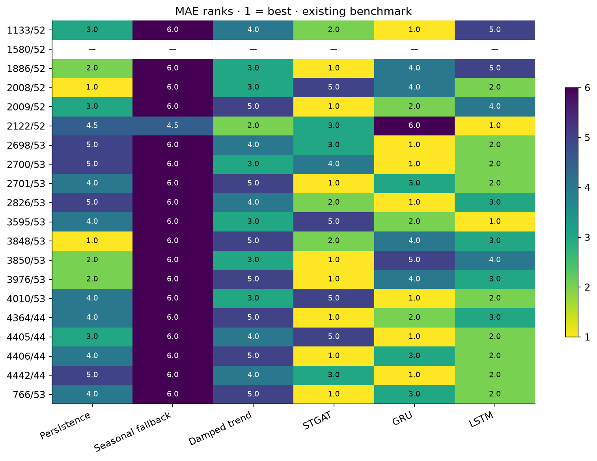
Rank Mae
MAE ranks · 1 = best · existing benchmark; blank rows have no measured targets.
Vector SVG
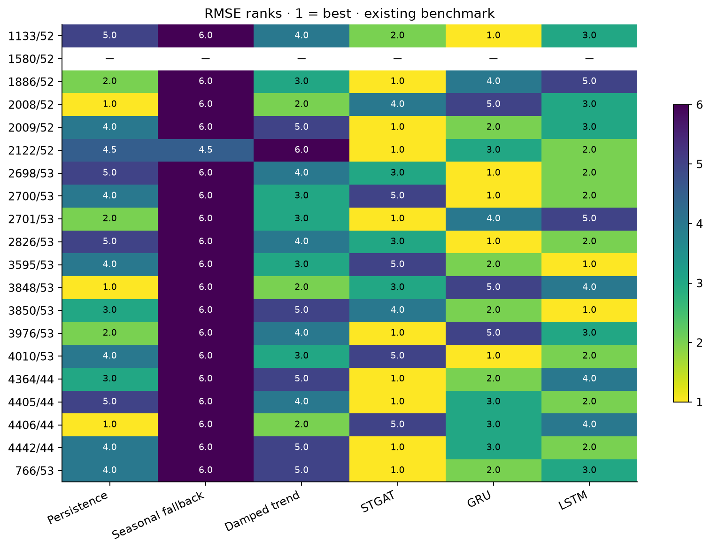
Rank Rmse
RMSE ranks · 1 = best · existing benchmark; blank rows have no measured targets.
Vector SVG
Rank R2
R² ranks · 1 = best · existing benchmark; blank rows have no measured targets.
Vector SVG
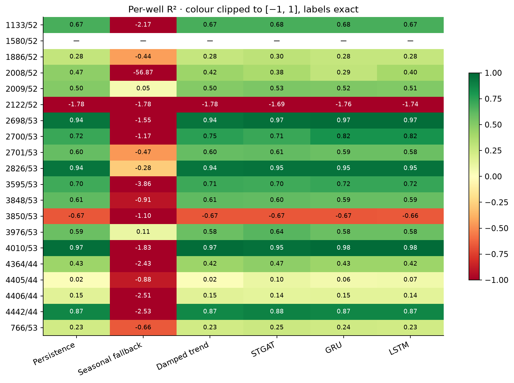
R2Heatmap
Per-well R² · colour clipped to [−1, 1], labels exact; blank rows have no measured targets.
Vector SVG
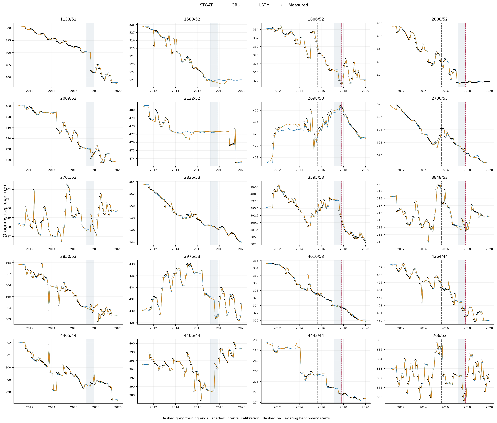
Predictions Comparison
All wells; measured values only; monthly dates retained.
Vector SVG
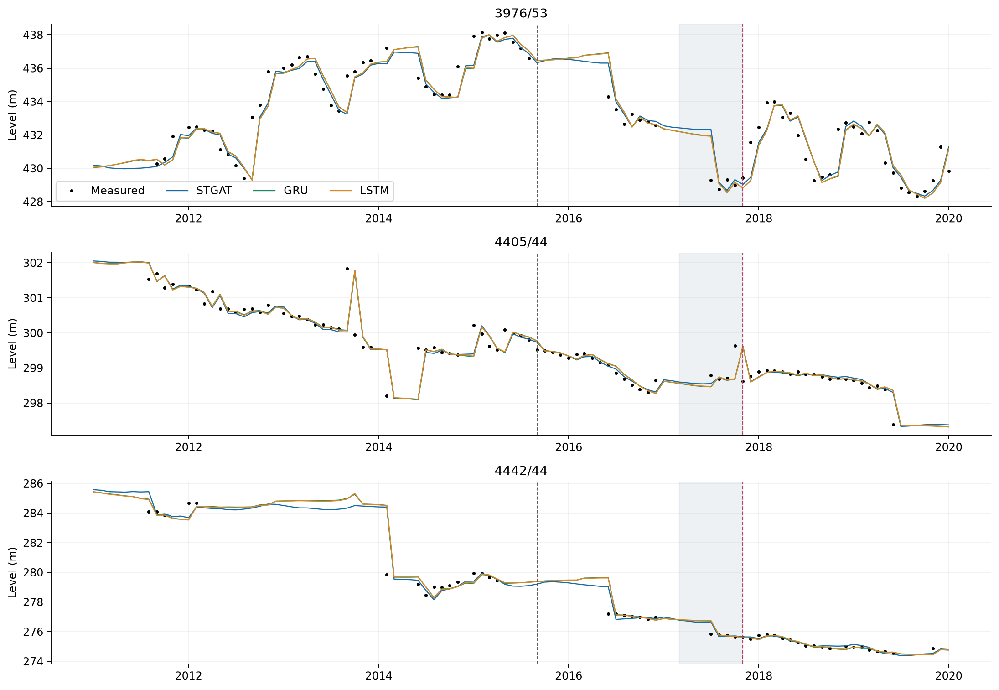
Selected Wells Comparison
Original selected well IDs; actual dated measurements.
Vector SVG
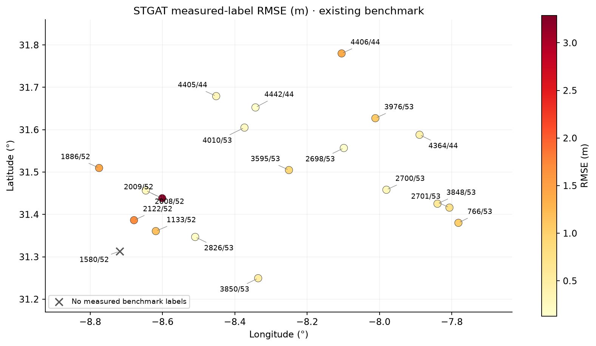
Rmse Spatial Distribution
Geographic error map; no network tiles required; unscored wells marked.
Vector SVG
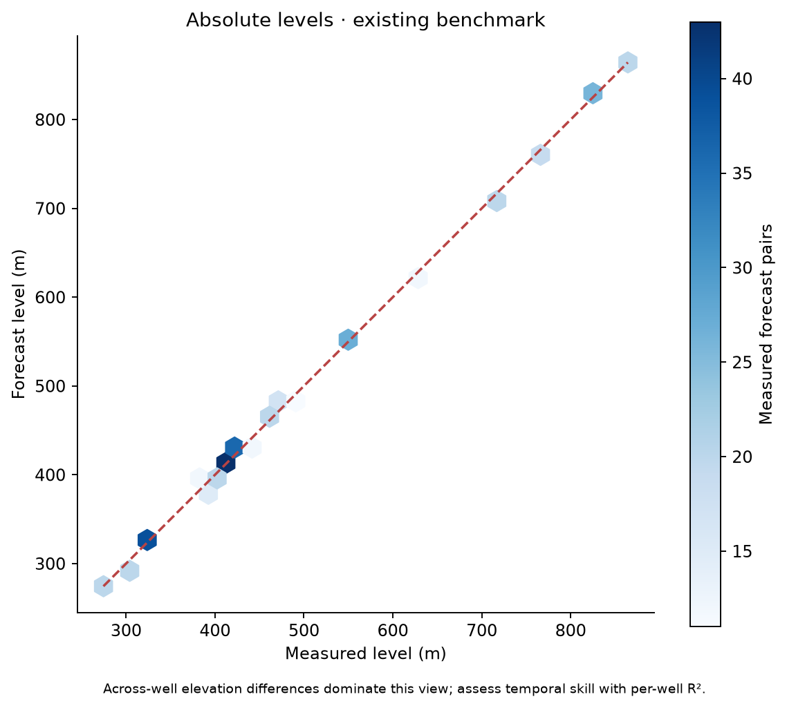
Density Obs Vs Pred
Measured targets only; no pooled R² claim.
Vector SVG
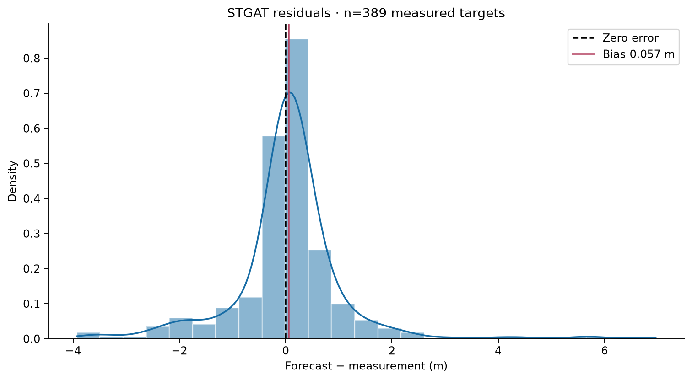
Residuals Distribution
Residuals exclude missing and imputed labels.
Vector SVG
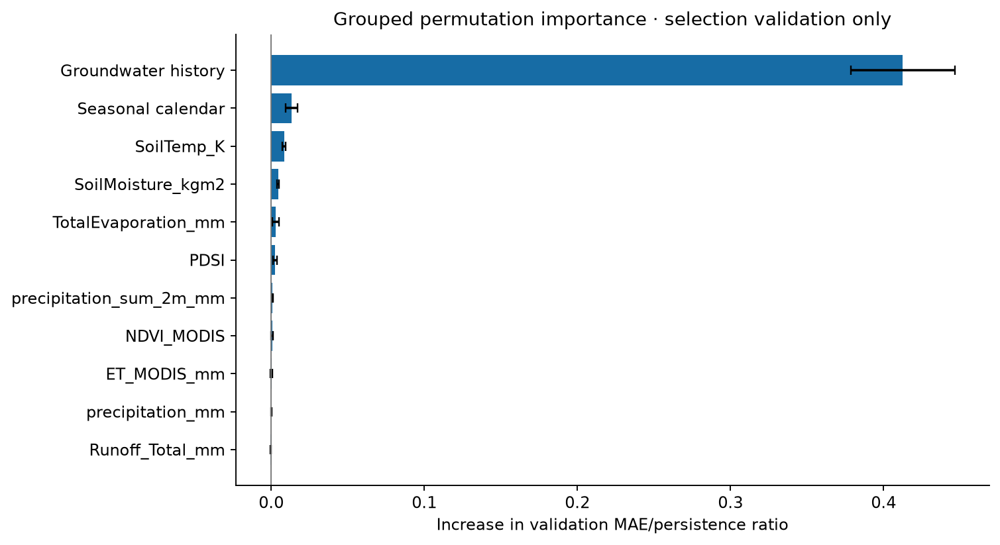
Feature Importance
Values/masks/coverage permuted jointly; groundwater anchor included in its group; diagnostic, not causal.
Vector SVG
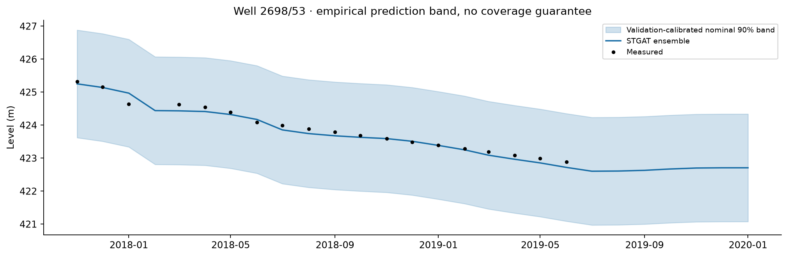
Uncertainty Well
Held-out March-October 2017 interval calibration; temporal/spatial dependence limits guarantees.
Vector SVG
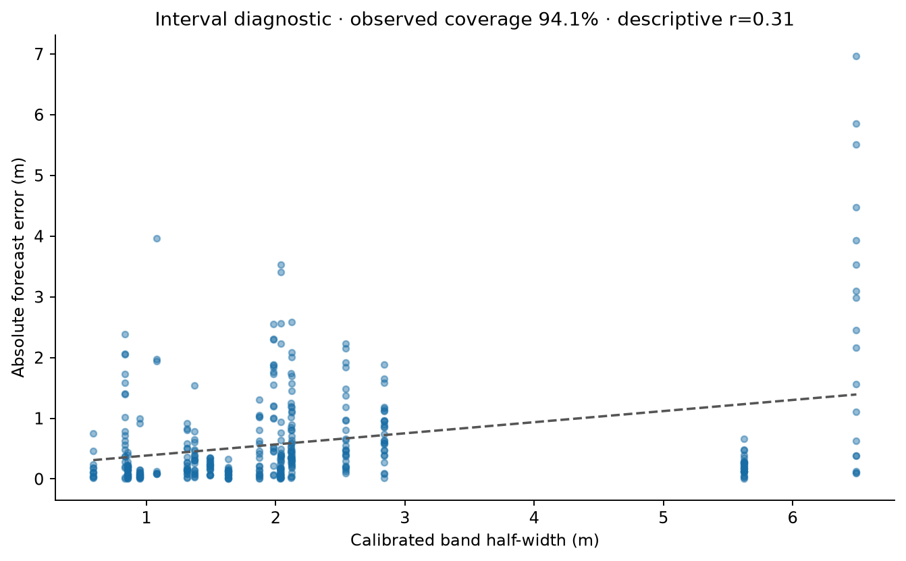
Uncertainty Vs Error
Empirical coverage on measured benchmark targets; correlation is descriptive, not a calibration proof.
Vector SVG
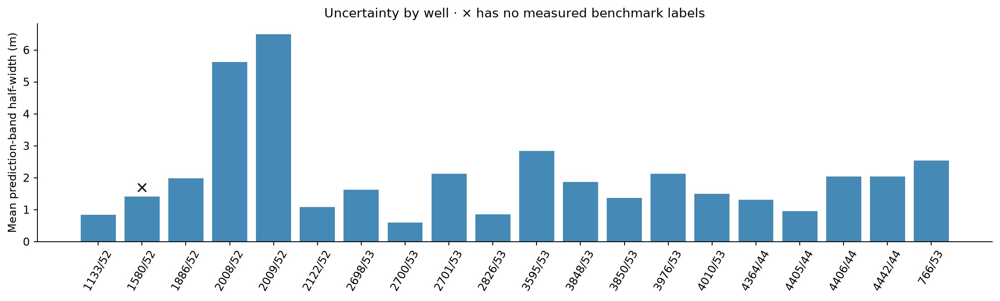
Avg Uncertainty Per Well
Calibrated interval widths; unscored wells remain visible.
Vector SVG
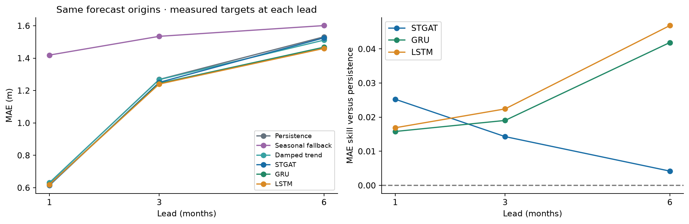
Horizon Comparison
Like-for-like baseline comparison at lead(s) 1, 3, 6 months.
Vector SVG